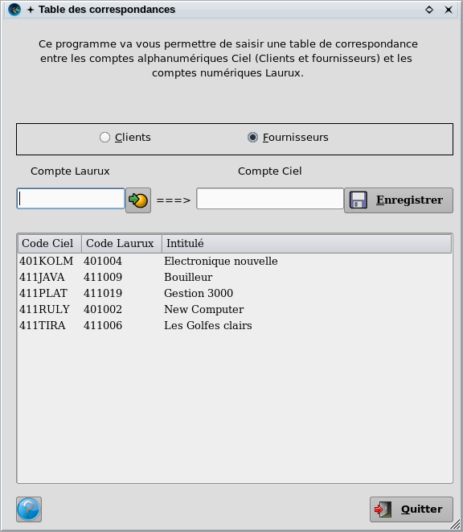
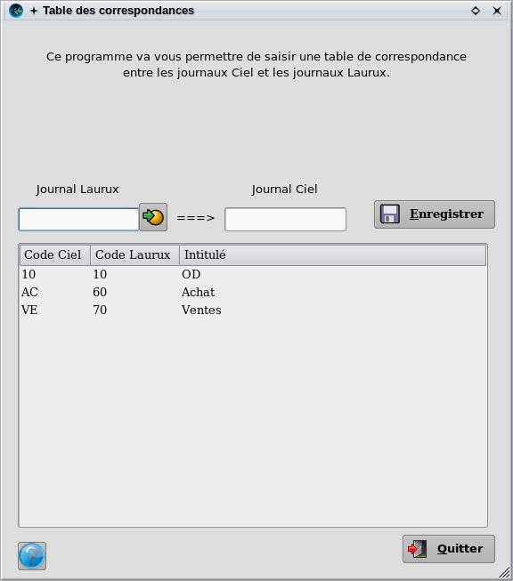
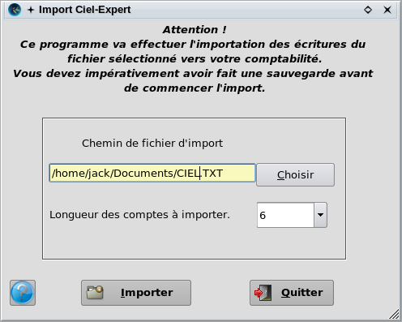

~ Comptabilité et Facturation Laurux ~ |
||
|
|
Ce programme est utilisé pour importer dans Laurux, les écritures d'un exercice en cours, en provenance de Ciel.
Comment proceder ?
1- Sous Ciel.
Le fichier texte doit être généré par l'option "export vers expert
comptable". L'extension du fichier généré sera du type "txt".
2- Sous Laurux.
Il convient en premier de copier le fichier texte sur un
répertoire de votre choix dans votre système Linux.
a- Tables de
correspondance.
En comptabilité ==> Outils ==> Import Ciel
expert ==> Tables de correspondance, vous avez deux tables a
complèter. La table des correspondances entre les comptes et la table
des correspondances entre les journaux. Les autres comptes, gestion et
bilan, ne nécéssitent pas de tables de correspondance et seront créés
automatiquement.
Table de correspondance des comptes.

Table de correspondance des journaux.

b- Import des écritures.
Avant de lancer l'importation des écritures il faut faire une sauvegarde de votre base puis renseigner le nom du fichier Texte ainsi que la longueur des comptes utilisés sous Ciel.

Lorsque le traitement est terminé, il convient d'imprimer une balance générale sous Laurux afin de comparer les résultats avec une balance Ciel.
NB : Pour
ceux qui sont intéréssés voilà la structure que devront avoir les
enregistrements du fichier texte a importer.
La longueur des champs est fixe. (premier chiffre position de départ,
deuxième chiffre longueur)
1- Code journal = 6, 2
2- Compte = 36, de 6 à 8. Cette longueur est a saisir dans la zone
had-hoc du programme d'import.
3- Intitulé = 104, 34
4- Date = 8, 8
5- Libellé écriture = 47, 25
6- Numéro écriture = 1, 5
7- Numéro document = 24, 12
8- Sens = 85, 1 ("D" ou "C")
9- Montant = 75, 10
----------------------------------------------------------------------------------------------------------------------